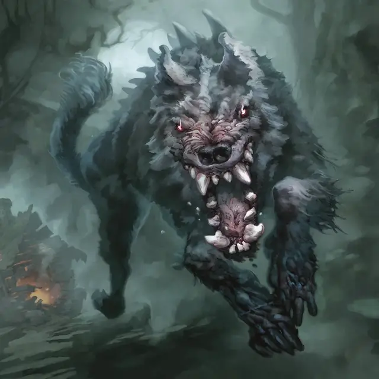

Ведьмолов
Witchstalker
Большой Монстр, без мировоззрения

Класс Доспеха 13
Хиты 82 (11к10 + 22)
Скорость 60 футов
| мод | спас | ||
|---|---|---|---|
| СИЛ | 18 | +4 | +7 |
| ЛОВ | 16 | +3 | +3 |
| ТЕЛ | 15 | +2 | +2 |
| мод | спас | ||
|---|---|---|---|
| ИНТ | 8 | −1 | −1 |
| МДР | 12 | +1 | +4 |
| ХАР | 6 | −2 | −2 |
Навыки Восприятие +7, Скрытность +6
Чувства истинное зрение 60 футов, пассивное Восприятие 17
Языки понимает Общий, но не может говорить
Опасность 6 (2300 опыта)
Бонус мастерства +3
Особенности
Сопротивление магии. Ведьмолов с преимуществом совершает спасброски от заклинаний и других магических эффектов.
Запах магии. Ведьмолов может чувствовать присутствие и расположение магии в пределах 120 футов от себя. Он также с преимуществом совершает броски атаки против существ, которые наложили заклинание после окончания последнего хода ведьмолова.
Действия
Мультиатака. Ведьмолов совершает две атаки Укусом.
Укус. . Рукопашная атака оружием: +7 к попаданию, досягаемость 5 фт., одна цель. Попадание: 14 (3к6 + 4) колющего урона. Если цель — существо Большого размера или меньше, оно должна преуспеть в спасброске Силы Сл 15, иначе упадёт ничком.
Разрушающий разум вой (перезарядка 5–6). Ведьмолов издает ужасающий вой, и каждое существо в пределах 30 футов от него, не являющееся Монстром, должно совершить спасбросок Мудрости Сл 13. При провале существо получает 24 (7к6) урона психической энергией и с помехой совершает спасброски Телосложения для сохранение концентрации на заклинаниях до конца своего следующего хода. В случае успеха существо получает только половину урона.
Реакции
Преследователь заклинаний. Сразу после того, как существо в пределах 120 футов от ведьмолова накладывает заклинание, ведьмолов магически телепортируется в незанятое пространство в пределах 5 футов от этого существа и может совершить одну атаку Укусом по этому существу.
Описание
Ведьмолов в два раза крупнее своих обычных сородичей — это гигантские волки, которых притягивает к источникам магии сверхъестественное обоняние. В результате вересковые пустоши и леса Данбарроу представляют собой хорошие охотничьи угодья. Чем мощнее источник магии, тем больше ведьмоловов собирается в этой местности. К своему ужасу, ведьмы привлекают около дюжины таких охотников.
Ведьмолов напоминают чудовищных волков с огромными челюстями и ребристыми шипами. Питаясь заклинателями и другими источниками магии, охотники на ведьм развили свои собственные магические способности, в том числе сверхъестественный вой и способность телепортироваться рядом с ничего не подозревающей добычей.